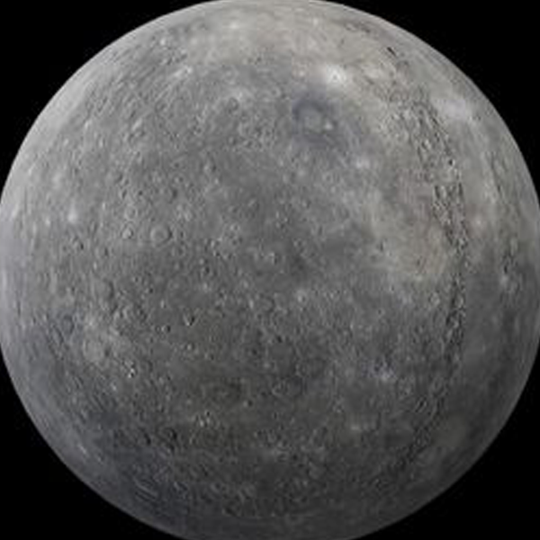
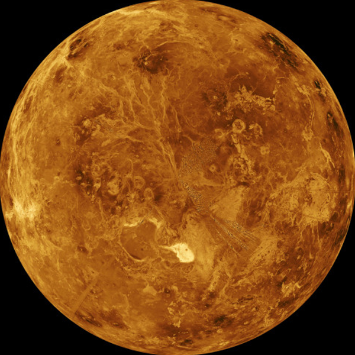

-

水星
太陽系中距離太陽最近的行星
水星是一個類地行星，其直徑只有地球的38%左右。水星的表面由隕石坑、峽谷和平原組成，它的表面受到強烈的日照和極端的溫度變化的影響。水星的軌道周期只有88天，是太陽系中公轉週期最短的行星，因此它成為了天文學家研究的重要對象。水星上沒有大氣層，也沒有天然衛星。儘管水星靠近太陽，但它表面的溫度卻有時可達到430攝氏度，晚上則可能降到-180攝氏度以下。目前已經有多個探測器對水星進行了探測，這些探測器為我們了解這顆行星提供了寶貴的資料。
最無聊的行星
水星是一個類地行星，其直徑只有地球的38%左右。水星的表面由隕石坑、峽谷和平原組成，它的表面受到強烈的日照和極端的溫度變化的影響。水星的軌道周期只有88天
介紹影片
-

金星
太陽系最亮的行星
金星是太陽系中最接近地球的行星之一，位於太陽系八大行星的第二個位置，緊鄰著地球，因此常被稱為“晨星”或“夕星”。金星的表面溫度非常高，達到了約460攝氏度，是太陽系中最熱的行星，且大氣層中的二氧化碳濃度極高，約為地球大氣層中的220倍。金星的表面還有許多山脈、火山、峽谷等地形，最大的火山是“马卡拉山”，高達17公里，是太陽系中最高的火山之一。此外，金星的表面還存在著許多大洞穴，這些洞穴形成的原因目前還不清楚。
一天比一年長的行星
金星因為自轉逆向於其他行星，金星需要243個地球日才能繞自己的軸運動一周，但是圍繞太陽卻只需要225個地球日。在新的一天來臨之前，一年已經過去了。
介紹影片
-

火星
Elon Musk 的最愛
火星是太陽系中與地球最為相似的行星之一，位於地球和木星之間。火星在夜空中呈現出橘紅色，因此也被稱為“紅色星球”。直徑約為地球的一半，它的自轉週期和地球相似，大約為24小時37分22秒。火星擁有一個非常薄的大氣層，主要由二氧化碳和少量的氮、氬、氧氣等氣體組成。這個大氣層太稀薄，以至於無法保持溫度和氣壓，因此火星表面的溫度和氣壓都非常低，不能維持液態水存在。
太陽系最高的山
水儘管火星表面的溫度和氣壓極低，但科學家們發現它的南極冰蓋中存在大量的冰和冰沙，其中大部分是二氧化碳冰，還有少量的水冰。火星上的峽谷、撞擊坑、火山和沙丘等地貌特徵也令人稱奇。其中最著名的是赤道附近的撞擊坑“奧林帕斯山”，它是太陽系中已知的最高的山脈之一，高達27公里。
介紹影片
-
木星
太陽系最大的行星
木星是太陽系中體積最大的行星。它的體積是地球的1,317倍，是太陽系中最大的行星，但是密度很小，只有地球的1/4。木星的大氣層主要由氫和氦組成，還含有少量甲烷、氨、水蒸氣和重元素，因此呈現出橙色和白色的條紋狀。這些條紋狀氣流是由木星自身自轉和內部物質的運動所造成的。木星大氣層中的風速非常快，其中最強的風速可達到400公里/小時。木星表面的溫度為-145℃，但它的內部溫度可能會達到2萬℃以上，這是由於重力壓縮所引起的高溫。
最多衛星的行星
木星還擁有太陽系中最大的衛星數量，目前已知的衛星數量超過80個。其中最著名的是伽利略衛星，它是人類第一個繞木星探測器的名字。伽利略衛星的表面有許多火山和峽谷，它們的形成和地球上的類似，但是在木星這樣一個大的行星上，這些特徵的規模更加宏大。此外，木星上還有許多風暴和旋渦，最著名的是“大紅斑”，它是一個巨大的風暴，比地球還要大得多。
介紹影片
-
土星
行星環最大的行星
土星是八大行星中距離太陽第二遠的行星。它的大小是地球的9.5倍，質量是地球的95倍。土星以它的美麗的環系統和許多衛星而聞名於世界。土星的環是太陽系中最壯觀的天體之一，是由數百萬塊冰和石頭組成的。它的環繞著行星的赤道，由數個圓環和間隔的空隙組成。土星的大氣層主要由氫和氦組成，還包括甲烷、氨、乙烷和丙烷等物質。這些物質在高速的風流中形成各種各樣的雲層和氣旋。
擁有最豐富的衛星
土星的衛星也是其特色之一，它有至少82顆衛星。其中最大的衛星是泰坦，它是太陽系中第二大的衛星，甚至比水星和冥王星還要大。泰坦表面有液態甲烷和乙烷的湖泊和河流，這使得它成為了天文學家們研究可能存在生命的地方之一。除了泰坦，土衛六也很著名，因為它有一個被認為是可能有液態水存在的地下海洋。
介紹影片
-

天王星
太陽系倒數第二遠的行星
天王星是由英國天文學家威廉·赫歇爾於1781年發現的。為太陽系中距太陽第七遠的行星，天王星的直徑為51,118公里，質量為地球質量的14.5倍，體積是地球的63倍。它的表面溫度平均為-214°C，天王星的大氣層主要由氫和氦組成，還有少量的甲烷、氨和水等氣體，這些氣體給天王星的大氣層帶來了藍綠色的色彩。天王星的大氣層中也有類似風暴的天氣系統，但與木星和土星相比，天王星的天氣系統更微弱。
太陽系中最偏心的行星
天王星的自轉軸傾斜了98度，這使得它的極區在軌道平面之外，導致它的南北極區接受到比其他行星更強烈和不穩定的日照。這種極端的傾斜導致天王星的磁場和磁層也呈現出極端的形態。天王星的磁場是在太陽系中最弱的磁場之一，磁場偏移了大約60度。
介紹影片
-

海王星
太陽系最遙遠的藍色行星
海王星是最後一顆被發現的行星。海王星的大小和質量僅次於天王星，是一顆類木行星。它距離太陽約48億公里，軌道週期為164.8年。由於距離太陽太遠，它的表面溫度非常低。海王星的大氣層中含有大量的氫、氦和甲烷，海王星的大氣吸收來自太陽的紅光並將藍光反射到太空中。因此擁有鮮豔的藍色。這也是它和天王星相似的地方。海王星的大氣層也非常活躍，有著強風和大型風暴。
地球人真的跟它不熟
海王星也有一些神秘的特徵，比如說海王星的磁場偏離了地軸，這使得海王星的磁極不是北極和南極，而是斜向的。
介紹影片